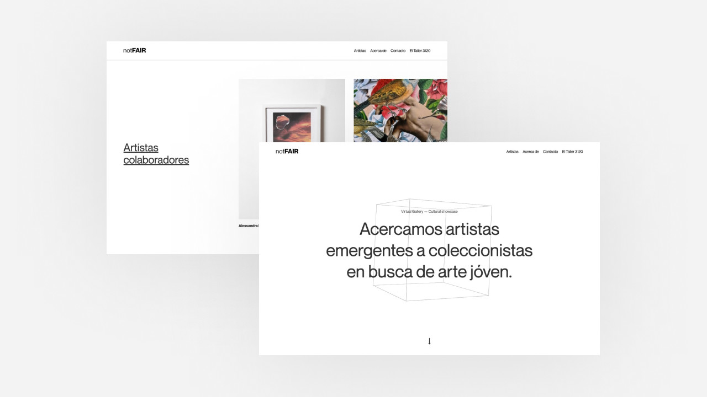

Portafolio

Website Notfair
Branding — Diseño UI/UX — CódigoNotfair es un proyecto que busca distribuir piezas de artistas locales por medio de una plataforma virtual.
Leer más
Website Ukko
Diseño UI/UX — CódigoUkko es una compañia de desarrollo de software enfocada en la creación de productos digitales a la medida.
Leer más
Website Mario Gutierrez
Diseño UI/UX — CódigoEsfuerzo de diseño colaborativo culminando en el sitio web y portafolio de Mario, un diseñador enfocado en branding.
Leer más
Arte de portadas para Xanatu
Ilustración — EditorialIlustración y conceptualización visual para Xanatu, un proyecto independiente de música folklórica mexicana.
Leer más